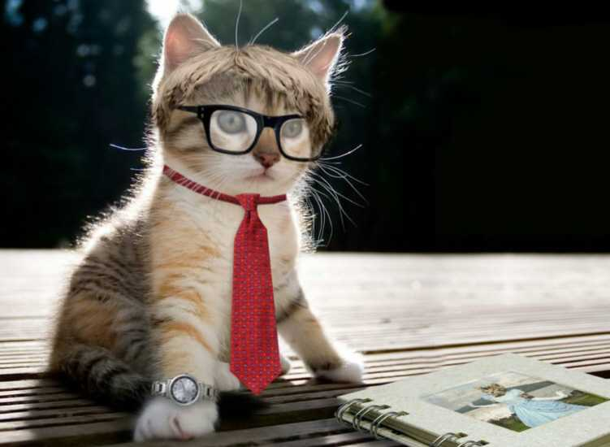

Um pouco sobre mim...
Como já deve saber, meu nome é Gato Sabido, sou formado em Análise de Sono.
Na minha graduação escrevi vários artigos descrevendo técnicas para dormir.
Também me dedico a palestrar sobre esse assunto.
Atualmente estou fazendo uma especialização também na área do Sono,
e estou trabalhando no artigo "Como dormir e não deixar os humanos em paz - Técnicas para conciliar o sono".

Minhas atuações...
Já atuei como professor efetivo na Faculdade Gatos Gaiatos,
lecionando as disciplinas: Sono Orientado a Humanos, Fundamentos do Sono Quântico,
Sistemas Operacionas do Sono e Técnicas do Sono, e também,
como coordenador do curso Administração do Sono.
Agora, trabalho como palestrante pela Coaching Gatos Perdidos, onde meus trabalhos são
focados nos felinos com problemas em dormir.
A comunidade do sono espera por você,
faça parte desse projeto e venha dormir com a gente.